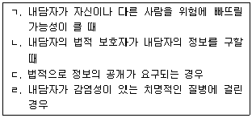
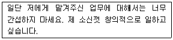
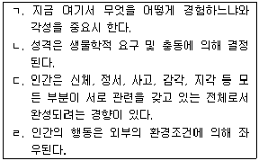
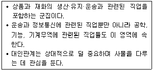
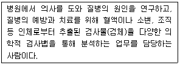
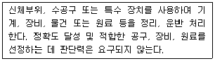
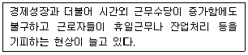
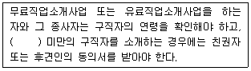

직업상담사-2급 (2014-08-17 기출문제)
1과목: 직업상담학
1. Ginzberg가 제시한 직업발달단계를 바르게 나열한 것은?
- 잠정기 → 환상기 → 현실기
- 환상기 → 잠정기 → 현실기
- 성장기 → 탐색기 → 확립기 → 유지기 → 은퇴기
- 성장기 → 확립기 → 탐색기 → 유지기 → 은퇴기
(정답률: 84%)

2. 처음 직업상담을 받는 내담자에게서 탐색해야 할 내용으로 가장 적합한 것은?
- 자기인식 수준
- 유머감각 수준
- 내담자의 경제적 상황
- 상담자와 문화적 차이
(정답률: 90%)
3. 진로 선택과 관련된 이론으로 인생초기의 발달 과정을 중시하는 이론은?
- 인지적 정보처리이론
- 정신분석이론
- 사회학습이론
- 진로발달이론
(정답률: 73%)
4. 직업상담시 초기면담에서 도움이 되지 않는 행동은?
- 내담자에게 적절한 호칭을 사용하면서 상담한다.
- 내담자가 이해하지 못하는 단어를 사용한다.
- 긴장을 줄이기 위해 가끔 유머를 사용한다.
- 내담자에게 신체적으로 가깝게 기울이며 근접하여 상담한다.
(정답률: 88%)
5. 진로시간전망 검사 중 Cottle이 제시한 원형검사에서 원의 크기가 나타내는 것은?
- 과거, 현재, 미래
- 방향성, 변별성, 통합성
- 시간차원에 대한 상대적 친밀감
- 시간차원의 연결 구조
(정답률: 76%)
6. 단기상담을 진행하기에 가장 적합한 내담자는?
- 잦은 가출로 어머니가 상담을 의뢰한 17세의 고등학생
- 성격장애의 경향성을 보이는 19세의 고등학교 중도탈락자
- 중학교 이후 학교 부적응과 우울을 겪고 있는 18세의 고등학생
- 이성 친구를 사귀는 데 도움을 받기 위해 상담을 신청한 15세의 중학생
(정답률: 87%)
7. Super가 제시한 흥미사정기법에 해당하지 않는 것은?
- 표현된 흥미
- 선호된 흥미
- 조작된 흥미
- 조사된 흥미
(정답률: 73%)
8. Roe의 직업분류체계는 8가지 장(Field)과 6가지 수준(Level)의 2차원 조직체계로 구성되어 있는데 8가지 장에 포함되지 않는 것은?
- 서비스
- 예술과 연예
- 과학
- 교육
(정답률: 57%)
9. 비지시적 상담을 원칙으로 자아와 일에 대한 정보 부족 혹은 왜곡에 초점을 맞춘 직업상담은?
- 정신분석 직업상담
- 내담자중심 직업상담
- 행동적 직업상담
- 발달적 직업상담
(정답률: 82%)
10. 상담내용에 대한 비밀을 지키지 않아도 되는 상황을 모두 고른 것은?

- ㄱ, ㄴ, ㄷ
- ㄱ, ㄴ, ㄹ
- ㄴ, ㄷ, ㄹ
- ㄱ, ㄷ, ㄹ
(정답률: 84%)
11. 다음 내용에 대한 상담자의 공감적 이해수준 중 가장 높은 것은?

- 자네가 알아서 할 일은 내가 부당하게 간섭한다고 생각하지 말게.
- 자네가 지난번에 처리했던 일이 아마 잘못 됐었지?
- 믿고 맡겨준다면 잘 할 수 있을 것 같은데, 간섭 받는다는 기분이 들어 불쾌한 게로군.
- 기분이 나쁘더라도 상사의 지시대로 해야지.
(정답률: 89%)
12. 행동적 상담기법 중 불안을 감소시키는 방법으로 이완법과 함께 쓰이는 방법은?
- 강화
- 변별학습
- 사회적 모델링
- 체계적 둔감화
(정답률: 87%)
13. 생애주기에 관한 연구들의 결과가 주는 시사점과 가장 거리가 먼 것은?
- 모든 연령수준별로 일에 대한 이해, 일을 수행하기 위한 훈련과 자격, 원하는 직업을 얻는 방법, 생활과 직업의 관계를 인식해야 한다.
- 특히 10대에게는 직업에 필요한 적당한 기술과 훈련이 필요하다.
- 한 번 얻은 직업정보는 시간과 상황에 관계없이 계속 유지되어야 한다.
- 여성과 노인들을 위한 취업정보체계가 필요하다.
(정답률: 83%)
14. 내담자의 인지적 명확성을 위한 직업상담과정으로 가장 적합한 것은?
- 내담자와의 관계 → 진로와 관련된 개인적 사정 → 직업선택 → 정보통합과 선택
- 직업탐색 → 내담자와의 관계 → 정보통합과 선택 → 직업선택
- 내담자와 관계 → 인지적 명확성/동기에 대한 사정 → 예/아니요 → 개인상담/직업상담
- 개인상담/직업상담 → 내담자와의 관계 → 인지적 명확성/동기에 대한 사정 → 예/아니요
(정답률: 86%)
15. 인간중심 상담이론에 관한 설명으로 가장 적합한 것은?
- 객관적 체험이 최우선이다.
- 인간은 학습을 통해 자아실현의 경향을 배운다.
- 인간은 타율적이며 외부의 통제에서 벗어나기 어렵다.
- 상담에서 삼담자의 태도와 허용적인 분위기가 중요하다.
(정답률: 67%)
16. 직업상담의 목적과 가장 거리가 먼 것은?
- 내담자가 이미 잠정적으로 선택한 진로결정을 확고하게 해주는 것이다.
- 개인의 직업목표를 명백히 해주는 과정이다.
- 내담자가 자기 자신과 직업세계에 대해 알지 못했던 사실을 발견하도록 도와주는 것이다.
- 내담자가 최대한 고소득 작업을 선택하도록 돕는 것이다.
(정답률: 88%)
17. 게슈탈트 이론에 관한 설명으로 옳은 것을 모두 고른 것은?

- ㄱ, ㄴ
- ㄱ, ㄷ
- ㄱ, ㄴ, ㄷ
- ㄴ, ㄷ, ㄹ
(정답률: 65%)
18. 특성-요인 직업상담에서 Williamson이 검사의 해석단계에서 이용할 수 있도록 제시한 상담기법은?
- 가정
- 해석
- 변명
- 설명
(정답률: 66%)
19. 포괄적 직업상담 프로그램의 단점으로 가장 적합한 것은?
- 직업결정 문제의 원인으로 불안에 대한 이해와 불안을 규명하는 방법이 결여되어 있다.
- 직업상담의 문제 중 진학상담과 취업상담에 적합할 뿐 취업 후 직업적응 문제들을 깊이 있게 다루지 못하고 있다.
- 직업선택에 미치는 내적 요인의 영향을 지나치게 강조한 나머지 외적 요인의 영향에 대해서는 충분하게 고려하고 있지 못하다.
- 직업상담사가 교훈적 역할이나 내담자의 자아를 명료화하고 자아실현을 시킬 수 있는 적극적태도를 취하지 않는다면 내담자에게 직업에 대한 정보를 효과적으로 알려줄 수 없다.
(정답률: 73%)
20. 직업선택을 위한 마지막 과정으로 선택할 직업에 대한 평가과정 중 Yost가 제시한 방법이 아닌 것은?
- 원하는 성과연습
- 확률추정연습
- 대차대조표연습
- 동기추정연습
(정답률: 70%)
2과목: 직업심리학
21. 다음은 Roe가 제안한 8가지 직업 군집 중 어디에 해당하는가?

- 기술직(Technology)
- 서비스직(Service)
- 비스니스직(Business Contact)
- 옥외활동직(Outdoor)
(정답률: 84%)
22. 가치중심적 진로접근 모형의 기본명제와 가장 거리가 먼 것은?
- 개인이 우선권을 부여하는 가치들은 얼마 되지 않는다.
- 가치는 환경속에서 가치를 담은 정보를 획득함으로써 학습된다.
- 한 역할의 특이성은 역할 안에 있는 필수적인 가치들의 만족 정도와 관련된다.
- 생애역할에서의 성공은 학습된 기술과 인지적 · 신체적 적성을 제외한 요인에 의해 결정된다.
(정답률: 71%)
23. 조직구성원에게 다양한 직무를 경험하게 함으로써 여러 분야의 능력을 개발시키는 경력개발 프로그램은?
- 직무 확충(Job Enrichment)
- 직무 순환(Job Rotation)
- 직무 확대(Job Enlargement)
- 직무 재분류(Job Reclassification)
(정답률: 84%)
24. 진로선택과 관련된 태도와 능력의 발달 정도를 진단 · 기술하는 검사는?
- 진로적성검사
- 진로흥미검사
- 진로성격검사
- 진로성숙도검사
(정답률: 65%)
25. 특성-요인이론과 관련된 내용과 가장 거리가 먼 것은?
- 특성-요인 직업상담은 정신역동적 가설에서 비롯되었다.
- Parsons는 이 이론의 기반이 되는 3요소 직업지도모델을 구체화하였다.
- 특성의 안정성과 지속성은 의문을 제기하는 학자들이 있어 논쟁이 되고 있다.
- 특성-요인이론에 따른 직업상담 방법들은 합리적이고 인지적인 특성을 가진다.
(정답률: 54%)
26. 인간 발달의 생물학적 · 심리학적 · 사회경제적 결정인자로 직업발달론을 설명하는 이른바 ‘이치문 모델’을 주장하는 학자는?
- Super
- Ginzberg
- Tiedman
- Gottfredson
(정답률: 70%)
27. 스트레스에 관한 설명으로 옳은 것은?
- 스트레스에 대한 일반적응증후는 경계, 저항, 탈진 단계로 진행된다.
- 1년간 생활변동단위(Life Change Unit)의 합이 90인 사람은 대단히 심한 스트레스를 겪는 사람이다.
- A유형의 사람은 B유형의 사람들보다 스트레스에 더 인내력이 있다.
- 사회적 지지가 스트레스의 대처와 극복에 미치는 영향력은 거의 없다.
(정답률: 78%)
28. 스트레스에 대처하기 위한 포괄적인 노력과 가장 거리가 먼 것은?
- 과정중심적 사고방식에서 목표지향적 초고속 사고로 전환해야 한다.
- 가치관을 전환시켜야 한다.
- 스트레스에 정면으로 도전하는 마음가짐이 있어야 한다.
- 균형 있는 생활을 해야 한다.
(정답률: 83%)
29. Holland 이론에 대한 설명과 가장 거리가 먼 것은?
- 욕구이론적 접근을 사용하여 직업선택을 설명한다.
- 사람들은 능력을 발휘하며 자신의 가치관에 따라 일할 수 있는 직업환경을 찾는다.
- 직업환경은 현실적, 탐구적, 예술적, 사회적, 진취적, 관습적 6가지 환경으로 나눌 수 있다.
- 개인의 성격과 진로선택과의 관계를 기초로 한 모델이다.
(정답률: 68%)
30. Seeman의 개념적 틀을 이용하여 Blauner가 규정한 비소외적 상태에 해당되지 않는 것은?
- 목 적
- 자유와 통제
- 사회적 통합
- 자기실현
(정답률: 53%)
31. 다음 중 표준편차에 대한 설명으로 옳은 것은?
- 최저점과 최고점의 점수차
- 최빈치와 최소치 간의 점수차의 평균
- 각 점수들이 평균에서 벗어난 평균면적
- 평균에서 각 점수들이 평균적으로 이탈된 정도
(정답률: 63%)
32. 직업선택 영향요인 중 내부요인에 해당되지 않는 것은?
- 훈련수준 등의 개인 정보적 요인
- 성별 등의 일반적인 요인
- 적성 등의 개인 심리적 요인
- 교육기회 등의 개인 사회적 요인
(정답률: 31%)
33. 신뢰도가 높은 심리검사는?
- 측정하고자 하는 특성을 정확하게 측정하는 검사
- 측정하고자 하는 특성을 일관성 있게 측정하는 검사
- 검사를 개발하는 데 대규모 표본에 근거한 검사
- 남녀노소 누구에게나 실시할 수 있는 검사
(정답률: 74%)
34. 스트레스의 원인 중 역할갈등은 어디에 해당하는가?
- 직무 관련 스트레스원
- 개인 관련 스트레스원
- 조직 관련 스트레스원
- 물리적 환경 관련 스트레스원
(정답률: 64%)
35. 앞으로의 직무분석의 변화 방향에 대한 설명과 가장 거리가 먼 것은?
- 직무분석을 위해 앞으로는 다른 부서의 작업자와 같은 내부 고객이나 조직 밖의 외부 고객으로부터 직무에 관한 정보를 얻을 필요성이 증가될 것이다.
- 앞으로는 직무정보를 수집할 때 직접관찰이나 면접, 설문지법보다 자동적으로 수행을 기록하는 장비들의 사용이 증가될 것이다.
- 과거에는 직무분석에서 과제 외 수행에 초점을 두었지만 앞으로는 과제수행 자체를 중심으로 자료를 수집할 필요성이 증가할 것이다.
- 앞으로는 직무의 내용이 빨리 변하므로 분석의 단위를 보다 넓혀서 역량을 중심으로 분석할 필요가 있다.
(정답률: 57%)
36. 심리검사에 관한 설명 중 틀린 것은?
- 속도검사는 숙련도를 측정하는 검사이다.
- 역량검사는 궁극적인 문제해결력을 측정하는 검사이다.
- 수행검사는 대상이나 도구를 직접 다루어야 하는 검사이다.
- 준거참조검사는 타인과 비교하기 위한 검사이다.
(정답률: 66%)
37. 이미 신뢰성이 입증된 유사한 검사점수와의 상관계수를 검토하는 신뢰도는?
- 검사-재검사 신뢰도
- 동형검사 신뢰도
- 빈분신뢰도
- 채점자 간 신뢰도
(정답률: 68%)
38. 작업자 명세서에 일반적으로 포함되지 않는 것은?
- 지식
- 능력
- 흥미
- 동기
(정답률: 63%)
39. Holland가 제안한 진로안정성에 영향을 주는 요인이 아닌 것은?
- 성
- 지능
- 사회계층
- 동기
(정답률: 43%)
40. 직업적성검사에 속하는 심리검사는?
- GATB
- MMPI
- TAT
- K-WAIS
(정답률: 69%)
3과목: 직업정보론
41. 국가기술자격 서비스 분야의 종목별 응시자격으로 틀린 것은?
- 텔레마케팅관리사 – 제한 없음
- 스포츠 경영관리사 – 제한 없음
- 임상심리사 1급 – 임상심리와 관련하여 2년 이상 실습수련을 받은 사람 또는 4년 이상 실무에 종사한 사람으로서 심리학 분야에서 석사학위이상의 학위를 취득한 사람 및 취득 예정자
- 컨벤션기획사1급 – 해당 종목의 2급 자격을 취득한 후 응시하고자 하는 종목의 속하는 동일 직무분야에서 2년 이상 실무에 종사한 자
(정답률: 59%)
42. 국가직무능력표준에 대한 설명과 가장 거리가 먼 것은?
- 능력단위요소는 적용범위와 작업상황으로 구성된다.
- 직무의 하위구성요소는 능력단위이다.
- 직무능력표준이란 직무를 수행하기 위하여 요구되는 지식, 기술, 소양 등의 내용을 국가가 산업부문별, 수준별로 체계화 한 것이다.
- 능력단위별로 평가지침과 직업기초능력을 규정한다.
(정답률: 41%)
43. 한국표준직업분류(2007)에서 분류원칙에 대한 설명으로 틀린 것은?
- 포괄적인 업무의 경우에는 직무내용상 상관성이 많은 항목에 분류한다.
- 다수 직업 종사자의 경우에는 취업시간이 많은 직업을 택한다.
- 포괄적인 업무의 경우에는 높은 수준의 직무능력을 필요로 하는 항목에 따라서 분류한다.
- 재화의 생산 및 공급과정의 상이한 단계에 연관된 업무인 경우에는 공급과정에 관련된 업무에 따라 분류한다.
(정답률: 63%)
44. 2014년 처음 시행되는 국가기술자격 종목은?
- 토양환경기사
- 스마트자동차기사
- 반도체설계산업기사
- 온실가스관리기사
(정답률: 42%)
45. 환국표준직업분류(2007)에서 “일반적으로 완벽하게 읽고 쓸 수 있는 능력과 정확한 계산능력, 그리고 상당한 정도의 의사소통 능력을 필요로 한다”고 설명하는 직능수준은?
- 제1직능수준
- 제2직능수준
- 제3직능수준
- 제4직능수준
(정답률: 57%)
46. 한국표준산업분류(2008)에서 산업결정방법에 대한 설명으로 틀린 것은?
- 생산단위의 산업 활동은 그 생산단위가 수행하는 주된 산업 활동(판매 또는 제공되는 재화 및 서비스)의 종류에 따라 결정된다.
- 주된 산업 활동은 산출물(재화 또는 서비스)에 대한 부가가치(or)의 크기에 따라 결정되어야 하나, 부가가치(액)의 측정이 어려운 경우에는 산출액에 의하여 결정한다.
- 계절에 따라 정기적으로 산업에 달리하는 사업체의 경우에는 조사시점에서 경영하는 사업과는 관계없이 조사대상 기간 중 판매액이 많았던 활동에 의하여 분류된다.
- 휴업 중 또는 자산을 청산중인 사업체의 산업은 영업 중 또는 청산을 시작하기 전의 산업 활동에 의하여 결정하며, 설립중인 사업체는 개시하는 산업 활동에 따라 결정한다.
(정답률: 59%)
47. 고용안정사업 중 고용촉진지원에 해당하지 않는 것은?
- 고령자 고용연장 지원금
- 임금피크제 지원금
- 임신출산여성 고용안정 지원금
- 유망창업기업의 고용지원금
(정답률: 43%)
48. 다음 중 실업급여를 받을 수 없는 경우는?
- 다른 직장으로 옮기기 위하여 퇴직하는 경우
- 도산, 폐업 등 회사의 경영사정에 의해 그만둔 경우
- 신기술도입으로 도저히 새 업무에 적응할 수 없어 그만둔 경우
- 배우자와의 동거를 위하여 주소를 이전함으로써 통근이 곤란하게 되어 이직하는 경우
(정답률: 73%)
49. 한국직업사전(2012)의 부가 직업정보에서 정규교육에 관한 설명으로 틀린 것은?
- 해당 직업의 직무를 수행하는 데 필요한 일반적인 정규교육수준을 의미한다.
- 현행 우리나라 정규교육과정의 연한을 고려하여 그 수준은 6개로 분류된다.
- 해당 직업 종사자의 평균 학력을 나타낸 것이다.
- 독학, 검정고시 등을 통해 정규교육과정을 이수하였다고 판단되는 기간도 포함된다.
(정답률: 74%)
50. 2014년 현재 계좌적합훈련과정으로 인정받을 수 있는 것은?(관련규정 개정전 문제로 기존 정답은 3번입니다. 여기서는 3번을 누르면 정답 처리 됩니다.)
- 공인노무사
- 변리사
- 재직자 집체훈련 외국어과정
- 공인중개사
(정답률: 80%)
51. 한국표준산업분류(2008)의 분류 기준으로 틀린 것은?
- 산출물의 특성
- 투입물의 특성
- 소비활동의 일반적인 결합형태
- 생산된 재화의 특성
(정답률: 56%)
52. 경제활동인구조사에서 종사상 지위로 고용계약기간이 1개월 미만인 임금근로자는?
- 임시근로자
- 계약직근로자
- 고용직근로자
- 일용근로자
(정답률: 75%)
53. 한국표준산업분류(2008)의 분류구조 및 부호체계에 대한 내용으로 틀린 것은?
- 분류구조는 대분류(알파벳 문자 사용), 중분류(2자리 숫자 사용), 소분류(3자리 숫자 사용), 세분류(4자리 숫자 사용)의 4단계로 구성된다.
- 부호처리를 할 경우에는 아라비아 숫자만을 사용토록 했다.
- 분류항목 간에 산업내용의 이동을 가능한 억제하였으나 일부 이동내용에 대한 연계분석 및 시계열연계를 위하여 부록에 수록된 신구 연계표를 활용하도록 하였다.
- 중분류의 번호는 01부터 99까지 부여하였으며, 대분류별 중분류 추가여지를 남겨놓기 위하여 대분류 사이에 번호 여백을 두었다.
(정답률: 62%)
54. 다음은 한국직업전망(2013)에 수록된 직업 중 무엇에 관한 설명인가?

- 임상심리사
- 임상병리사
- 방사선사
- 응급구조사
(정답률: 79%)
55. 직업정보를 수집 · 제공시 고려해야 할 사항과 가장 거리가 먼 것은?
- 명확한 목표를 가지고 계획적으로 수집한다.
- 최신의 자료를 수집한다.
- 자료를 수집할 때 자료출처와 일자를 기록한다.
- 직업정보는 전문성이 있으므로 전문용어를 사용하여 제공한다.
(정답률: 79%)
56. 한국직업사전(2012)의 ‘사물’과 관련된 기능 중 다음에서 설명하는 것은?

- 제어조작
- 운전
- 수동조작
- 단순작업
(정답률: 57%)
57. 한국직업사전(2012)의 작업강도에 대한 설명에서 손에 들거나 팔에 걸거나 어깨에 메고 물체를 한 장소에서 다른 장소로 옮기는 작업은?
- 들어올림
- 운 반
- 밈
- 이 동
(정답률: 76%)
58. 다음 중 국가공인 민간자격은?
- 심리상담사
- ITQ
- 청소년지도사
- 노인사회복지사
(정답률: 67%)
59. 워크넷에서 제공하는 성인용 직업적성검사의 적성요인과 하위검사를 짝지은 것으로 틀린 것은?
- 언어력 – 어휘력 검사, 문장독해력 검사
- 수리력 – 계산력 검사, 자료해석력 검사
- 추리력 – 수열추리1 · 2검사, 도형추리 검사
- 사물지각력 – 지각속도 검사, 기호쓰기 검사
(정답률: 55%)
60. 민간직업정보와 비교하여 공공직업정보의 특성에 관한 설명과 가장 거리가 먼 것은?
- 필요한 시기에 최대한 활용되도록 한시적으로 신속하게 생산 및 운영된다.
- 광범위한 이용가능성에 따라 공공직업정보체계에 대한 직접적이며 객관적인 평가가 가능하다.
- 특정 분야 및 대상에 국한되지 않고 전체 산업 및 업종에 걸친 직종 등을 대상으로 한다.
- 직업별로 특정한 정보만을 강조하지 않고 보편적인 항목으로 이루어진 기초적인 직업정보체계로 구성되어 있다.
(정답률: 76%)
4과목: 노동시장론
61. 노동자 7명의 평균생산량이 20단위일 때, 노동자를 추가로 1명 더 고용하여 평균생산량이 18단위로 감소하였다면, 이 때 추가로 고용된 노동자의 한계생산량은?
- 4단위
- 5단위
- 6단위
- 7단위
(정답률: 71%)
62. 마찰적 실업을 해소하기 위한 가장 효과적인 정책은?
- 성과급제를 도입한다.
- 근로자 파견업을 활성화한다.
- 협력적 노사관계를 구축한다.
- 구인 · 구직 정보제공시스템의 효율성을 제고한다.
(정답률: 77%)
63. 노동시장의 유연성에 대한 설명과 가장 거리가 먼 것은?
- 노동시장의 유연성이란 일반적으로 외부환경변화에 인적자원이 신속하고 효율적으로 배분되는 노동시장의 능력을 지칭한다.
- 다기능공화, 배치전환, 작업장 간 노동이동 등을 통해 생산과정 변화에 대한 근로자의 적응력을 높이는 것을 기능적 유연성이라 한다.
- 작업을 하청의 형태로 회부에 주거나 용업업체에 의해 노동자를 고용하는 것은 노동시장의 유연성이라 할 수 없다.
- 일시휴업이나 휴가증가, 주휴 2일제 등은 노동시장 유연성의 유형 중 하나이다.
(정답률: 61%)
64. 경쟁시장에서 이윤을 극대화하는 어느 기업은 노동자에게 하루에 50,000원의 임금을 지급하고 있으며, 현재 14명을 고용하고 있다. 이 회사제품은 개당 100원에 팔리고 있다고 하면, 14번째 노동자는 하루에 몇 개를 생산해야 하는가?
- 50개
- 500개
- 1,000개
- 주어진 정보로는 알 수가 없다.
(정답률: 74%)
65. 종업원의 의사결정참여가 가장 적극적인 기업형태는?
- 생산자협동조합
- 전문경영인 경영기업
- 종업원 주식소유기업
- 전통적 투자자 소유기업
(정답률: 63%)
66. 근로기준법에 경영상 이유에 의한 해고, 탄력적 근로시간제 등의 조항이 등장하고 파견근로자 보호 등에 관한 법률이 제정된 이유로 가장 타당한 것은?
- 획일화되는 사회에 적응하기 위함이다.
- 노동조합의 전투성을 진정시키기 위함이다.
- 외부자보다는 내부자를 보호하기 위함이다.
- 불확실한 시장상황에 기업이 신속하게 대응할 수 있도록 하기 위함이다.
(정답률: 68%)
67. 다음의 현상을 설명하는 개념은?

- 임금의 하방경직성
- 후방굴절형 노동공급곡선
- 노동의 이력현상(Hysteresis)
- 임금의 화폐적 현상
(정답률: 75%)
68. 최저임금제의 기대효과와 가장 거리가 먼 것은?
- 산업 간, 직업 간 임금격차 해소
- 경기 활성화에 기여
- 산업구조의 고도화
- 청소년 취업촉진
(정답률: 74%)
69. 비경제활동인구에 포함되지 않는 사람은?
- 일기분순이나 노동재해 등의 이유로 인한 일시 휴직자
- 가사를 돌보는 가정주부
- 초 · 중 · 고등학교에 재학 중인 학생
- 심신장애자
(정답률: 72%)
70. 우리나라 기업의 노사협의회에서 다루고 있지 않은 사항은?
- 생산성 향상과 성과 배분
- 근로자의 채용 · 배치 및 교육훈련
- 임금 및 근로조건의 교섭
- 안전, 보건, 그 밖의 작업환경 개선과 근로자의 건강증진
(정답률: 38%)
71. 임금에 대한 설명으로 틀린 것은?
- 실질임금은 명목임금을 물가수준으로 나눈 것이다.
- 특별급여는 초과급여의 일부분이다.
- 기본급은 정액급여에 속한다.
- 월 일정액의 제수당은 정액급여에 포함된다.
(정답률: 53%)
72. 시장경제를 채택하고 있는 국가의 노동시장에서 직종별 임금격차가 존재하는 이유와 가장 거리가 먼 것은?
- 직종에 따라 근로환경의 차이가 존재하기 때문이다.
- 직종에 따라 노동조합 조직률의 차이가 존재하기 때문이다.
- 직종 간 정보의 흐름이 원활하기 때문이다.
- 노동자들의 특정 직종에 대한 회피와 선호가 다르기 때문이다.
(정답률: 72%)
73. 단체교섭에서 사용자의 교섭력에 관한 설명과 가장 거리가 먼 것은?
- 기업의 재정능력이 좋으면 사용자의 교섭력이 높아진다.
- 사용자 교섭력의 원천 중 하나는 직장폐쇄(Lockout)를 할 수 있는 권리이다.
- 사용자는 쟁의행위기간 중 그 쟁의행위로 중단된 업무를 원칙적으로 도급 또는 하도급 줄 수 있다.
- 비조합원이 조합원의 일을 대신할 수 있는 여지가 크다면, 그만큼 사용자의 교섭력이 높아진다.
(정답률: 67%)
74. 기업에서 단기노동수요를 증가시키는 요인으로 가장 적합한 것은?
- 상품 수요의 증가
- 실업의 감소
- 노동생산성의 체감
- 고용보험료의 인상
(정답률: 66%)
75. 사용자의 구인활동에 관한 설명과 가장 거리가 먼 것은?
- 사용자는 호황기에 채용기준을 낮추고 불황기에 채용기준을 높이는 것이 일반적이다.
- 고임금정책은 사용자의 채용비용을 줄이는 데 도움이 되지 않는다.
- 사용자는 구직자의 생산성을 정확히 알고자 하면 할수록 채용비용이 증가한다.
- 공석이 발생할 경우 내부승진에 의해 필요한 사람을 고용하는 것이 기업 측의 위험부담이 적다.
(정답률: 53%)
76. 노동조합이 임금에 미치는 영향 가운데 위협효과에 관한 설명으로 가장 적합한 것은?
- 파업의 위협으로 노동조합에 가입한 근로자의 임금이 상승하는 효과이다.
- 노동조합을 조직하겠다는 위협으로 비노동조합 부문 근로자의 임금이 상승하는 효과이다.
- 파업 중 대체인력 사용의 위협으로 노동조합부문 근로자의 임금이 하락하는 효과이다.
- 실업자를 대체인력으로 사용하겠다는 위협으로 비노동조합부문 근로자의 임금이 하락하는 효과이다.
(정답률: 62%)
77. A기업은 기업에 특화된 훈련(Firm-specific Training)에 더 많은 투자를 하고, B기업은 모든 기업에 필요한 일반 훈련(General Training)에 더 많은 투자를 한 상태에서, A, B기업이 생산하는 상품수요가 감소한 경우 다음 중 해고 가능성이 높은 경우는?(단, 기타 조건은 일정하다고 가정한다.)
- 기업 A가 기업 B보다 해고 가능성이 높다.
- 기업 B가 기업 A보다 해고 가능성이 높다.
- A기업, B기업 모두 동일하게 해고시킨다.
- 위 내용으로는 판단할 수 없다.
(정답률: 74%)
78. 경제활동참여와 관련하여 옳은 것은?
- 실업자는 비경제활동인구이다
- 경제활동참가율은 전체인구 중 경제활동에 참여하는 사람들의 비율이다.
- 실업률은 경제활동참가자 중에 실업자가 차지하는 비율이다.
- 생산가능인구는 전체인구 중에 비경제활동인구를 제외한 나머지 사람들이다.
(정답률: 65%)
79. 노동조합의 쟁의수단이 아닌 것은?
- 파업
- 공장폐쇄
- 시위
- 불매운동
(정답률: 67%)
80. 성과급 제도의 장점으로 옳은 것은?
- 직원 간 화합이 용이하다.
- 근로의 능률을 자극할 수 있다.
- 임금의 계산이 간편하다.
- 확정적 임금이 보장된다.
(정답률: 77%)
5과목: 노동관계법규
81. 고용정책기본법의 목적과 가장 거리가 먼 것은?
- 노동시장의 효율성과 인력수급의 균형을 도모한다.
- 국민의 삶의 질 향상과 지속가능한 경제성장에 이바지한다.
- 근로자와 사업주의 경제적 · 사회적 지위 향상을 지원한다.
- 국민 개개인이 평생에 걸쳐 직업능력을 개발하고 더 많은 취업기회를 가질 수 있도록 한다.
(정답률: 55%)
82. 고용보험법상 구직급여의 수급요건에 관한 설명으로 옳은 것은?
- 이직일 이전 12개월간 피보험 단위기간이 통산하여 180일 이상이어야 한다.
- 근로의 능력이 있음에도 불구하고 근로의 의사가 없어 취업하지 못한 상태라도 수급자격이 있다.
- 피보험자가 해고된 경우에는 해고사유과 관계없이 수급자격이 있다.
- 피보험자가 정당한 사유 없이 자기 사정으로 이직한 경우에는 수급자격이 없다.
(정답률: 57%)
83. 근로기준법상 경영상 이유에 의한 해고의 제한 요건이 아닌 것은?
- 긴박한 경영상의 필요가 있어야 한다.
- 해고 이전에 이를 피하기 위한 노력을 다하여야 한다.
- 해고 전 근로자대표의 사전 동의가 필요하다.
- 합리적이고 공정한 해고의 기준을 정하고 이에 따라 그 대상자를 선정하여야 한다.
(정답률: 68%)
84. 근로기준법상의 임금의 지급방법에 관한 원칙으로만 연결된 것은?
- 통화불의 원칙, 직접불의 원칙, 정액불의 원칙, 일시불의 원칙
- 통화불의 원칙, 직접불의 원칙, 전액불의 원칙, 매월 1회 이상 정기불의 원칙
- 통화불의 원칙, 정액불의 원칙, 전액불의 원칙, 일시불의 원칙
- 직접불의 원칙, 정액불의 원칙, 전액불의 원칙, 매월 1회 이상 정기불의 원칙
(정답률: 62%)
85. 직업안정법에 관한 다음 설명 중 ( )에 들어갈 알맞은 것은?

- 15세
- 18세
- 19세
- 20세
(정답률: 61%)
86. 근로자직업능력개발법상 직업능력개발훈련의 대상이 되는 근로자에 해당하는 자는?
- 학생
- 전업주부
- 실업급여수급자
- 군인
(정답률: 71%)
87. 고용보험법에 관한 설명으로 옳은 것은?(관련 규정 개정전 문제로 여기서는 기존 정답인 2번을 누르면 정답 처리됩니다. 자세한 내용은 해설을 참고하세요.)
- 피보험기간이 2년이며 이직일 현재 45세인 자의 구직급여 소정급여일수는 150일이다.
- 65세 이상인 자에게도 고용보험법상의 고용안정 · 직업능력개발사업은 적용된다.
- 구직급여의 산정기초가 되는 임금일액이 그 근로자의 통상임금보다 저액일 경우에는 보험료 징수법에 따른 기준임금을 기초일액으로 한다.
- 구직급여를 수급받기 위하여서는 이직일 이전 12월간에 피보험 단위기간이 통산하여 90일 이상이라야 한다.
(정답률: 61%)
88. 근로기준법상의 개념정의와 틀린 것은?
- 근로자란 직업의 종류를 불문하고, 임금 · 급료 기타 이에 준하는 수입에 의하여 생활하는 자를 말한다.
- 사용자란 사업주 또는 사업 경영 담당자, 그 밖에 근로자에 관한 사항에 대하여 사업주를 위하여 행위하는 자를 말한다.
- 근로계약이란 근로자가 사용자에게 근로를 제공하고 사용자는 이에 대하여 임금을 지급하는 것을 목적으로 체결된 계약을 말한다.
- 임금이란 사용자가 근로의 대가로 근로자에게 임금, 봉급, 그 밖에 어떠한 명칭으로든지 지급하는 일체의 금품을 말한다.
(정답률: 56%)
89. 고용정책기본법상 한국잡월드에 관한 설명으로 틀린 것은?
- 한국잡월드는 법인으로 한다.
- 한국잡월드는 사업수행에 필요한 경비를 조달하기 위하여 입장료 · 체험관람료 징수 및 광고등의 수익사업을 할 수 없다.
- 개인 또는 법인 · 단체는 한국잡월드의 사업을 지원하기 위하여 한국잡월드에 금전이나 현물, 그 밖의 재산을 출연 또는 기부할 수 있다.
- 정부는 한국잡월드의 설립 및 운영을 위하여 필요한 경우에는 국유재산법, 물품관리법에도 불구하고 국유재산 및 국유물품을 한국잡월드에 무상으로 대부 또는 사용하게 할 수 있다.
(정답률: 72%)
90. 근로자직업능력개발법상 국가 및 사업주등의 책무에 관한 설명으로 틀린 것은?
- 지방자치단체 – 근로자단체 등이 하는 직업능력개발사업을 촉진 · 지원하기 위하여 필요한 시책을 마련할 의무
- 사업주 – 근로자를 대상으로 직업능력개발훈련에 관한 상담 · 취업지도, 선발기준을 마련할 의무
- 사업주단체 – 직업능력개발훈련이 산업현장의 수요에 맞추어 이루어지도록 산업부문별 직업능력개발훈련 수요조사 등 필요한 노력을 할 의무
- 직업능력개발훈련을 실시하는 자 – 직업능력개발훈련에 관한 상담 · 취업지도, 선발기준 마련등을 하여 근로자가 자신의 적성과 능력에 맞는 직업능력개발훈련을 받을 수 있도록 노력할 의무
(정답률: 60%)
91. 직업안정법상 고용노동부장관의 허가를 받아야 하는 것은?
- 국외 취업자모집
- 직업정보제공사업
- 근로자공급사업
- 유료직업소개사업
(정답률: 57%)
92. 직장 내 성희롱의 성립요건과 가장 거리가 먼 것은?
- 직장 내 사업주 · 상급자 또는 남녀 근로자가 다른 근로자에게 할 것
- 직장 내 지위를 이용하거나 업무와 관련하여 이루어질 것
- 직장 내에서만 성희롱이 이루어질 것
- 성적인 언어나 행동에 의하거나 이를 조건으로 할 것
(정답률: 73%)
93. 근로의 권리에 관한 내용과 가장 거리가 먼 것은?
- 해고의 제한
- 취업청구권
- 쟁의권
- 생활비지급청구권
(정답률: 42%)
94. 남녀고용평등과 일 · 가정 양립 지원에 관한 법률상의 육아휴직에 대한 설명 중 틀린 것은?
- 사업주는 근로자가 만 8세 이하 또는 초등학교 2학년 이하의 자녀를 양육하기 위하여 휴직을 신청하는 경우에 이를 허용하여야 한다.
- 육아휴직의 기간은 1년 이내로 한다.
- 육아휴직은 휴직의 일종이기 때문에 근속기간에 포함되지 아니한다.
- 육아휴직을 마친 후에는 휴직 전과 같은 업무 또는 같은 수준의 임금을 지급하는 직무에 복귀시켜야 한다.
(정답률: 72%)
95. 남녀고용평등과 일 · 가정 양립 지원에 관한 법률상 상시 5명 미만의 근로자를 사용하는 사업장에도 반드시 적용되어야 하는 것은?
- 모집과 채용에 있어서의 남녀차별금지
- 동일가치노동에 대한 동일임금지급
- 교육 · 배치 · 승진에 있어서의 남녀차별금지
- 정년 · 퇴직 · 해고에 있어서의 남녀차별금지
(정답률: 62%)
96. 노동법에 대한 설명과 가장 거리가 먼 것은?
- 근로자의 인간다운 생활보장
- 근대시민법 원리의 부정
- 노사대등의 실현
- 자본주의체제의 유지 · 발전
(정답률: 61%)
97. 고령자의 고용촉진을 위하여 고용하여야 할 제조업의 기준고용률은?
- 상시근로자수의 100분의 2
- 상시근로자수의 100분의 4
- 상시근로자수의 100분의 3
- 상시근로자수의 100분의 5
(정답률: 74%)
98. 고용상 연령차별금지 및 고령자고용촉진에 관한 법률상 고령자 고용촉진 및 고용안정에 관한 설명으로 옳은 것은?
- 상시 300명 이상의 근로자를 사용하는 사업장의 사업주는 기준고용률 이상의 고령자를 고용하여야 한다.
- 기준고용률에 미달하는 고령자를 고용하는 사업주는 매년 고용노동부장관에게 고령부고용부담금을 납부하여야 한다.
- 사업주가 기준고용률을 초과하여 고령자를 추가로 고용하는 경우에는 조세특례제한법으로 정하는 바에 따라 조세를 감면한다.
- 국가 및 지방자치단체, 공공기관의 운영에 관한 법률에 따라 공공기관으로 지정받은 기관의 장은 그 기관의 우선고용직종에 고령자와 장애인을 우선적으로 고용하도록 노력하여야 한다.
(정답률: 56%)
99. 근로자직업능력개발법상 직업능력개발훈련이 중요시 되는 대상이 아닌 것은?(관련 규정 개정전 문제로 여기서는 기존 정답인 3번을 누르면 정답 처리됩니다. 자세한 내용은 해설을 참고하세요.)
- 제조업의 생산직에 종사하는 근로자
- 단시간근로자
- 비진학청소년
- 국민기초생활보장법에 따른 수급권자
(정답률: 61%)
100. 고용상 연령차별금지 및 고령자고용촉진에 관한 법률상 정년에 관한 설명으로 틀린 것은?
- 사업주는 정년에 도달한 자가 그 사업장에 다시 취업하기를 희망할 때 그 직무수행 능력에 맞는 직종에 재고용하도록 노력하여야 한다.
- 사업주는 고령자인 정년퇴직자를 재고용할 때 임금의 결정을 종전과 달리 할 수 없다.
- 고용노동부장관은 정년퇴직자를 재고용하는 사업주에게 장려금을 지금할 수 있다.
- 고용노동부장관은 정년퇴직의 사유로 이직예정인 고령자의 구직활동을 지원하는 사업주에 대하여 인건비를 지원할 수 있다.
(정답률: 73%)